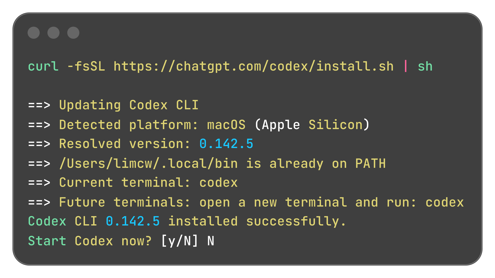
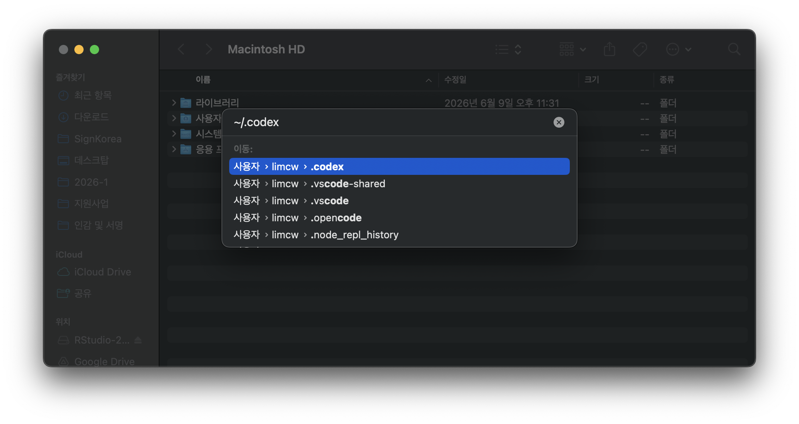
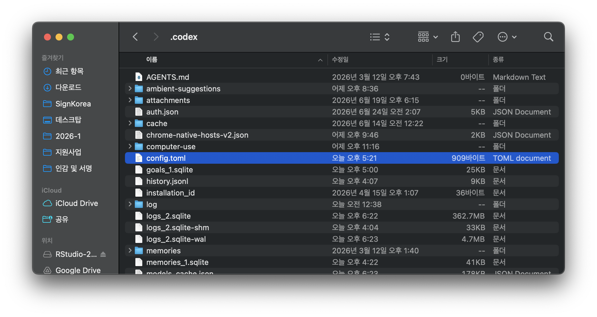
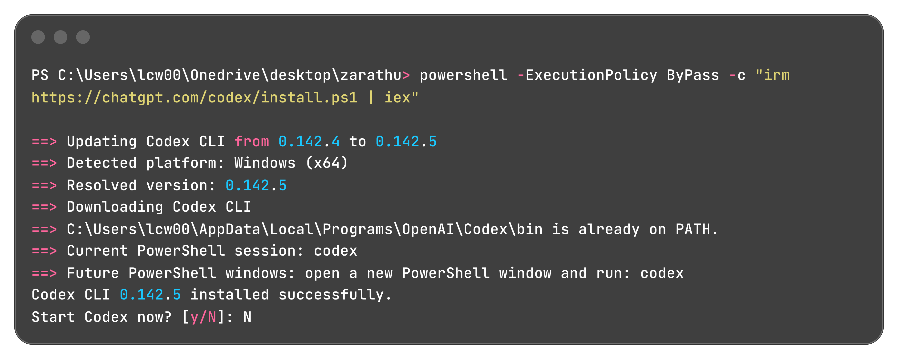
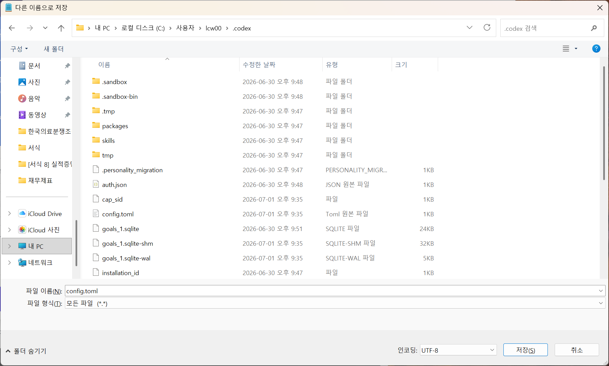
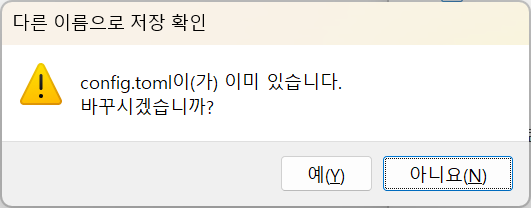
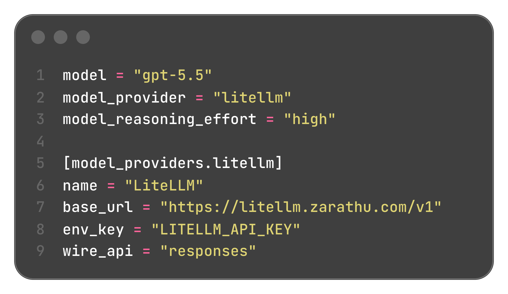

Codex 설치와 R 데이터분석
AI agent로 분석 환경 만들기
오늘 할 일
1. 설치
Mac과 Windows에서 Codex CLI를 설치한다.
2. 설정
수업용 API 키와 config.toml을 연결한다.
3. 실행
작업 폴더에서 codex를 실행한다.
4. 실습
R 분석 파일과 결과물을 Codex로 만든다.
Codex는 터미널에서 일하는 코딩 에이전트
| 구분 | 일반 챗봇 | Codex |
|---|---|---|
| 작업 방식 | 답변을 읽고 사람이 복사 | 파일을 읽고 수정하며 명령을 실행 |
| 실행 위치 | 웹 브라우저 중심 | 내 컴퓨터의 터미널과 작업 폴더 |
| 맥락 | 한 번의 질문 중심 | 프로젝트 파일과 이전 작업을 함께 반영 |
| 결과물 | 코드 조각 | .R, .qmd, 표, 그림, 보고서 파일 |
Codex는 “R 코드를 알려주는 도구”가 아니라, 작업 폴더 안에서 코드를 만들고 실행하며 고치는 도구다.
수업에서 사용할 흐름
- Codex CLI 설치
- 수업용 API 키 설정
config.toml저장- 작업 폴더에서
codex실행
설치 -> 설정 -> 실행 -> 요청 -> 검토
|
v
R 코드, 표, 그림, 결과 파일시작 전 준비: R·RStudio와 3개의 창
먼저 R과 RStudio가 설치되어 있어야 한다. (없으면 R → RStudio 순서로 먼저 설치)
수업 내내 타이핑하는 곳이 세 군데다. 헷갈리면 여기로 돌아온다.
| 어디에 | 무엇을 | 예 |
|---|---|---|
| OS 터미널 (터미널.app / PowerShell) | Codex 설치 | curl ... install.sh |
| RStudio Console | R 명령 (패키지 설치, API 키, 분석) | install.packages(...), usethis::edit_r_environ() |
| RStudio Terminal 탭 (Console 옆) | Codex 실행 | codex |
install.packages(...)를 터미널에 치거나, codex를 Console에 치면 에러가 난다. 명령마다 창을 확인하자.
설치가 부담되면 뒤의 Posit Cloud(브라우저) 방법으로 대체할 수 있다. 이 경우 OS 터미널 없이 브라우저 RStudio 하나로 끝난다.
설치: Mac
Mac 1 - 터미널에서 설치
설치 마지막에 Start Codex now? [y/N]가 나오면 수업에서는 N을 입력한다. 설정 파일을 먼저 만든 뒤 실행한다.
Mac 2 - 설치 결과 확인

Codex CLI installed successfully가 보이면 설치가 끝난 것이다.
Mac 3 - API 키 설정 (RStudio)
RStudio의 Console에서 순서대로 실행한다.
열린 .Renviron 파일에 아래 한 줄을 추가하고 저장한다.
LITELLM_API_KEY=전달받은 개별 API KEY따옴표 없이, = 앞뒤 공백 없이 입력한다. 줄 끝에서 Enter를 눌러 마지막에 빈 줄을 하나 남긴다.
저장 후 RStudio를 완전히 종료했다가 다시 실행한다. Console에서 Sys.getenv("LITELLM_API_KEY")로 키가 보이면 성공이다. 한 번 저장하면 컴퓨터를 재시작해도 유지된다.
Mac 4 - config.toml 저장 위치
~/.codex 폴더를 열고 config.toml 파일을 만든다.
- Finder를 연다.
Command + Shift + G를 누른다.~/.codex를 입력한다.config.toml파일을 저장한다.

Mac 5 - config.toml 배치

파일 이름은 반드시 config.toml이어야 한다.
Mac 6 - config.toml 내용
env_key에는 API 키 값이 아니라 환경변수 이름인 LITELLM_API_KEY를 적는다.
Mac 7 - Codex 실행
- RStudio에서
File > New Project로 작업 폴더를 만든다. - Terminal 탭(Console 옆)을 연다. 그 폴더에서 자동으로 시작된다.
codex를 입력한다.
API 키를 .Renviron에 저장했으므로, 반드시 RStudio의 Terminal 탭에서 실행해야 키가 자동으로 적용된다. (일반 터미널.app에서는 키가 안 잡힐 수 있다.)
처음 실행할 때 권한, 작업 폴더 신뢰 여부, 로그인 방식 등을 묻는 화면이 나올 수 있다. 수업에서는 강사 안내에 맞춰 진행한다.
설치: Windows
Windows 1 - PowerShell에서 설치
Windows 2 - 설치 결과 확인

Codex CLI installed successfully가 보이면 설치가 끝난 것이다.
Windows 3 - API 키 설정 (RStudio)
Mac과 동일하게 RStudio의 Console에서 순서대로 실행한다.
열린 .Renviron 파일에 아래 한 줄을 추가하고 저장한다.
LITELLM_API_KEY=전달받은 개별 API KEY따옴표 없이, = 앞뒤 공백 없이 입력한다. 줄 끝에서 Enter를 눌러 마지막에 빈 줄을 하나 남긴다.
저장 후 RStudio를 완전히 종료했다가 다시 실행한다. Console에서 Sys.getenv("LITELLM_API_KEY")로 키가 보이면 성공이다. 한 번 저장하면 컴퓨터를 재시작해도 유지된다.
Windows 4 - config.toml 저장
메모장에서 텍스트 파일을 만들고 아래 위치에 저장한다.
저장할 때 확인할 것:
- 파일 이름:
config.toml - 파일 형식: 모든 파일
- 인코딩: UTF-8
확장자가 config.toml.txt가 되면 Codex가 읽지 못한다. 파일 이름을 다시 확인한다.
Windows 5 - 저장 화면 확인


이미 config.toml이 있으면 덮어쓸지 묻는 창이 나올 수 있다.
Windows 6 - config.toml 내용

수업용 LiteLLM 주소와 API 키는 강의 운영 환경에 맞춘 설정이다. 개인 환경에서는 ChatGPT 로그인이나 OpenAI API key 로그인 방식도 사용할 수 있다.
Windows 7 - Codex 실행
- RStudio에서
File > New Project로 작업 폴더를 만든다. - Terminal 탭(Console 옆)을 연다. 그 폴더에서 자동으로 시작된다.
codex를 입력한다.
API 키를 .Renviron에 저장했으므로, 반드시 RStudio의 Terminal 탭에서 실행해야 키가 자동으로 적용된다.
문제가 있으면 먼저 진단한다.
설치: Posit Cloud (설치 없이 브라우저에서)
Posit Cloud를 쓰면?
내 컴퓨터에 아무것도 설치하지 않고, 브라우저 안의 RStudio에서 그대로 실습한다.
- OS 터미널이 없다. 모든 작업이 브라우저 RStudio 하나에서 이뤄진다.
- 설치할 곳은 RStudio Terminal 탭, R 명령은 Console — 두 군데뿐.
- 프로젝트를 Git 저장소에서 바로 불러올 수 있다.
로컬 설치(앞의 Mac/Windows)가 부담되면 이 방법으로 대체할 수 있다.
Posit Cloud 1 - 프로젝트 만들기
- https://posit.cloud 접속 후 로그인(회원가입 또는 구글 로그인).
- 우측 상단 New Project → New Project from Git Repository.
- 강사가 안내한 Git 저장소 주소를 붙여넣고 OK.
- 잠시 기다리면 브라우저 안에서 RStudio가 열린다.
저장소에서 바로 열었으므로, 작업 폴더가 이미 그 프로젝트로 잡혀 있다. (뒤에서 cd 필요 없음)
Posit Cloud 2 - Terminal에서 Codex 설치
Posit Cloud에는 OS 터미널이 없다. RStudio Terminal 탭(Console 옆)에서 바로 설치한다.
Codex CLI installed successfully가 보이면 설치 완료. Start Codex now? [y/N]가 나오면 N을 입력한다.
Posit Cloud 3 - API 키와 config.toml (Console)
API 키는 로컬과 똑같이 .Renviron에 저장한다.
config.toml은 Console에서 폴더를 만들고 편집기로 연다.
붙여넣을 config.toml 내용은 Mac 6 / Windows 6 슬라이드와 동일하다. 저장 후 세션을 재시작한다(우측 상단 새로고침).
Posit Cloud 4 - Codex 실행
RStudio Terminal 탭에서 실행한다.
프로젝트를 Git 저장소에서 열었으므로 이미 그 폴더에서 시작한다. .Renviron의 키도 Terminal 탭에 적용된다.
AGENTS.md: 분석 스타일 설정
AGENTS.md란?
프로젝트 루트에 두는 AI 지시 파일
- Codex가 작업 시작 때 자동으로 읽는 규칙 파일
- 코딩 스타일, 사용 패키지, 분석 컨벤션 등을 고정
- 한 번 작성하면 매번 동일한 스타일로 분석
AGENTS.md 예시 (1/2)
# 분석 스타일
## 기본 원칙
- data.table을 메인 패키지로 사용 (dplyr 사용 안 함)
- pipe operator(%>%)만 사용 (magrittr)
- global.R에서 전처리, analysis.R에서 분석 (파일 분리)
## global.R 구조
1. 데이터 읽기
2. 전처리 + 파생변수 생성
3. varlist에 분석 변수 저장
4. out = 분석용 데이터, out.label = 라벨 정보
5. **varlist와 out 나오기 전에 파생변수 모두 완료**
## 테이블 저장
- flextable으로 포맷팅 (논문에 바로 쓸 수 있는 형태)
- flexlsx + openxlsx2로 Excel 여러 시트에 저장AGENTS.md 예시 (2/2)
## 그림 저장
- 기본은 ppt (rvg::dml + officer 패키지)
- 벡터 그래픽, fullsize
## 주요 패키지
- jstable: CreateTableOneJS, cox2.display, glmshow.display
- jskm: Kaplan-Meier plot (jskm, svyjskm)
- 라벨 적용: LabeljsCox, LabeljsTable 등
## 주의사항
- survfit/coxph는 eval(substitute()) 패턴 필수
- 테이블 부등호: >= → ≥, <= → ≤ (유니코드)
- Table 1 footer는 실제 사용된 검정과 일치시키기이 AGENTS.md를 한 번 만들어두면, “Table 1 만들어줘”라고만 해도 항상 같은 스타일로 생성할 수 있다.
실전: R 데이터분석
예제 데이터: smc_example1.csv
PCI(스텐트 시술) 코호트 1,000명. 심혈관 사건(MACCE)과 사망을 추적한 예시 자료다.
- 기본 변수: Sex, Age, Height, Weight, BMI, DM, HTN, Smoking, Number_stent
- 생존 결과: MACCE / MACCE_date, Death / Death_date (date = 추적 일수)
예제 1: 데이터 전처리 (global.R)
자연어로 지시:
“https://raw.githubusercontent.com/jinseob2kim/R-skku-biohrs/main/data/smc_example1.csv” 읽어서 global.R 만들어줘.
AGENTS.md에 스타일을 적어두면, 이 한 줄만으로도 아래처럼 varlist·factor·label까지 갖춘 global.R이 만들어진다.
Codex가 생성하는 코드:
library(data.table);library(magrittr);library(jstable)
url <- "https://raw.githubusercontent.com/jinseob2kim/R-skku-biohrs/main/data/smc_example1.csv"
a <- fread(url)
varlist <- list(
Base = c("Sex", "Age", "BMI", "DM", "HTN", "Smoking", "Number_stent"),
Event = c("MACCE", "Death"),
Time = c("MACCE_date", "Death_date")
)
out <- a[, .SD, .SDcols = unlist(varlist)]
factor_vars <- c("Sex", "DM", "HTN", "Smoking", "MACCE", "Death")
out[, (factor_vars) := lapply(.SD, factor), .SDcols = factor_vars]
conti_vars <- setdiff(names(out), factor_vars)
out[, (conti_vars) := lapply(.SD, as.numeric), .SDcols = conti_vars]
out.label <- jstable::mk.lev(out)
for (v in c("DM", "HTN", "Smoking", "MACCE", "Death")) {
out.label[variable == v, val_label := c("No", "Yes")]
}예제 2: Table 1
자연어로 지시:
DM 기준으로 Table 1 만들어줘.
Age, BMI는 nonnormal로. Excel로 저장.
Codex가 실행하는 코드:
source("global.R")
tb1 <- jstable::CreateTableOneJS(
vars = names(out), strata = "DM", data = out,
nonnormal = c("Age", "BMI"),
labeldata = out.label, Labels = TRUE,
testNonNormal = wilcox.test
)
ft <- tb1$table[, 1:4] %>% # test, sig 컬럼 제거
data.frame(check.names = FALSE) %>%
cbind(Variable = rownames(.), .) %>%
flextable::flextable() %>%
flextable::set_caption("Table 1. Baseline characteristics by DM") %>%
flextable::add_footer_lines(
"P by Wilcoxon rank-sum test / Chi-squared or Fisher's exact test"
)예제 3: 생존분석
자연어로 지시:
DM 여부에 따른 MACCE Kaplan-Meier plot 그려줘.
p-value 표시하고, JAMA 스타일로.
ppt로 저장.
Codex가 실행하는 코드:
library(survival);library(jskm);library(officer);library(rvg)
dd <- copy(out)
dd[, MACCE := as.integer(as.character(MACCE))] # event는 0/1 정수로
fmla <- Surv(MACCE_date, MACCE) ~ DM
fit <- eval(substitute(survfit(f, data = dd), list(f = fmla)))
p <- jskm(fit, data = dd, pval = TRUE, table = TRUE,
marks = FALSE, theme = "jama",
ystratalabs = c("No DM", "DM"),
ystrataname = "DM")
# PPT 저장
doc <- read_pptx() %>%
add_slide(layout = "Blank") %>%
ph_with(dml(ggobj = p), location = ph_location_fullsize())
print(doc, target = "results/km_plot.pptx")예제 4: Cox Regression
자연어로 지시:
DM의 MACCE 위험을 Cox regression으로 분석해줘.
Age, Sex, HTN 보정하고, label 적용해서 Excel로 저장.
Codex가 실행하는 코드 (예제 3에 이어서 실행):
fmla <- Surv(MACCE_date, MACCE) ~ DM + Age + Sex + HTN
fit <- eval(substitute(coxph(f, data = dd, model = TRUE), list(f = fmla)))
cox_result <- jstable::cox2.display(fit)
cox_labeled <- jstable::LabeljsCox(cox_result, ref = out.label)
ft <- cox_labeled$table %>%
data.frame(check.names = FALSE) %>%
cbind(Variable = rownames(.), .) %>%
flextable::flextable() %>%
flextable::set_caption("Table 2. Cox proportional hazards model for MACCE") %>%
flextable::add_footer_lines("HR, hazard ratio; CI, confidence interval")
# Excel 저장
library(flexlsx);library(openxlsx2)
wb <- wb_workbook()
wb$add_worksheet("Cox")
wb <- wb_add_flextable(wb, "Cox", ft)
wb$save("results/Tables.xlsx")대화 이어가기
Codex의 강점: 맥락을 기억
- 이전 대화에서 만든 코드/결과를 기억하고 이어서 작업
- 추가 지시만 하면 기존 코드를 수정하거나 확장
팁과 주의사항
효과적인 지시 방법
구체적일수록 좋다
| 나쁜 예 | 좋은 예 |
|---|---|
| “분석해줘” | “DM 기준 Table 1 만들어줘, nonnormal은 Age” |
| “그래프 그려” | “KM plot 그려줘, JAMA 스타일, p-value 표시” |
| “저장해” | “ppt로 저장, fullsize, 벡터그래픽” |
단계별 지시가 안전
- 먼저: “smc_example1.csv 읽어서 구조 보여줘”
- 다음: “global.R 만들어줘”
- 그 다음: “DM 기준 Table 1 만들어줘”
- 마지막: “결과 Excel로 저장”
자주 쓰는 명령어
Codex 기본 명령
유용한 자연어 패턴
비용과 구독
Codex 사용 방식
| 방식 | 비용 | 특징 |
|---|---|---|
| 수업용 LiteLLM | 강의 안내 기준 | 수업 중 동일한 설정으로 사용 |
| ChatGPT 계정 로그인 | 플랜에 따라 다름 | 개인 실습과 일반 사용에 적합 |
| OpenAI API key | 사용량 기반 | 호출량에 따라 과금 |
수업에서는 안내받은 LiteLLM 설정을 사용한다. 개인 계정이나 API key를 쓸 때는 각 서비스의 과금 기준을 확인한다.
주의사항
반드시 확인할 것
코드 리뷰: AI가 만든 코드를 반드시 확인
- 특히 통계 방법이 맞는지, 변수 코딩이 맞는지
환자 데이터 보안: Codex는 로컬에서 실행
- 분석 파일과 명령을 읽고 처리할 수 있으므로 민감정보를 넣지 않는다.
- 프롬프트에 환자 정보를 직접 입력하지 않는다.
재현성: global.R + analysis.R + AGENTS.md를 함께 보관
- 동일한 지시로 동일한 결과를 다시 확인할 수 있다.
AI는 도구일 뿐이다. 통계적 판단과 결과 해석은 연구자의 몫이다.
설치 후 확인: codex doctor
설치가 잘 됐는지 한 번에 진단 (RStudio Terminal 탭에서)
- 설치 방식, 버전, PATH, Git 상태 등 자동 체크
- 문제 발견 시 해결 방법 안내
그래도 안 되면?
| 상황 | 해결 |
|---|---|
| codex 명령어 안 됨 | PATH에 ~/.local/bin 추가 |
| R 못 찾음 | Rscript PATH 확인 |
| 한글 깨짐 | Windows 설정에서 UTF-8 활성화 |
| 패키지 설치 에러 | Rtools 설치 |
정리
Codex + R 데이터분석 워크플로우
기대 효과
- 반복적인 코딩 작업 시간 대폭 단축
- 일관된 분석 스타일 유지 (AGENTS.md)
- 논문 수준 테이블/그림 즉시 생성
감사합니다
실습 및 질문

openstat.ai